Типові інтеграційні SOAP-конектори до інших реєстрів
- 1. Загальний опис
- 2. Встановлення типових розширень-конекторів
- 3. Розширення-конектори для отримання даних з ЄДР
- 4. Розширення-конектори для отримання даних із ДРАЦС
- 5. Розширення-конектор для отримання даних з ЄІБДВПО
- 6. Загальний SOAP http-конектор
- 6.1. Налаштування конектора
- 6.2. Використання у бізнес-процесі на прикладі надсилання запита до сервісу ЄДР
- 6.2.1. Користувацька задача введення даних для пошуку в іншому реєстрі
- 6.2.2. Скрипт для виконання запита через SOAP-конектор
- 6.2.3. Сервісна задача для відправлення пошукового запита до іншого реєстру
- 6.2.4. Скрипт для виводу даних на UI-форму користувача
- 6.2.5. Користувацька задача передачі даних на UI-форму
- 7. Загальний Trembita SOAP-конектор
- 7.1. Налаштування делегата
- 7.2. Використання у бізнес-процесі на прикладі надсилання запита до сервісу ЄДР
- 7.2.1. Користувацька задача введення даних для пошуку в іншому реєстрі
- 7.2.2. Скрипт для виконання запита через Trembita SOAP-конектор
- 7.2.3. Сервісна задача для відправлення пошукового запита до іншого реєстру
- 7.2.4. Скрипт для виводу даних на UI-форму користувача
- 7.2.5. Користувацька задача передачі даних на UI-форму
| 🌐 Цей документ доступний українською та англійською мовами. Використовуйте перемикач у правому верхньому куті, щоб змінити версію. |
1. Загальний опис
Взаємодія з реєстрами, що знаходяться поза межами Платформи, можлива завдяки шлюзу безпечного обміну даними (ШБО) "Трембіта".
ШБО "Трембіта" є захищеним інтерфейсом для електронної взаємодії між державними системами, який розгортається в межах Платформи реєстрів як сервіс і дозволяє використовувати власні ресурси для отримання інформації із зовнішніх систем.
Для виклику зовнішніх сервісів через ШБО "Трембіта", на Платформі реєстрів розроблено типові інтеграційні розширення-конектори, що дозволяють комунікувати через інтерфейс ШБО із зовнішніми сервісами за протоколом SOAP.
Кожний конектор використовується у бізнес-процесах для отримання даних із реєстрів поза межами Платформи.
| Наразі функціонування розроблених конекторів можливе лише з використанням серверів-заглушок, що імітують живе з’єднання. |
|
Щоб мати змогу використовувати розроблені на Платформі SOAP-інтеграційні конектори до зовнішніх сервісів та отримувати інформацію від інших реєстрів через ШБО "Трембіта", необхідно попередньо виконати конфігурації на рівні реєстру в адміністративній панелі Control Plane. Детальніше про налаштування інтеграцій через ШБО "Трембіта" ви можете переглянути у статті Налаштування взаємодії з реєстрами через ШБО "Трембіта" у Control Plane. |
2. Встановлення типових розширень-конекторів
Налаштування розширень-конекторів відбувається у застосунку Camunda Modeler. Перед початком роботи переконайтеся, що виконано всі передумови, описані у розділі Встановлення типових розширень до бізнес-процесів (для локальної розробки).
3. Розширення-конектори для отримання даних з ЄДР
Для спрощення моделювання бізнес-процесів розроблені типові інтеграційні конектори для отримання інформації з ЄДР[1], налаштування яких відбувається на схемах бізнес-процесів у додатку Camunda Modeler.
- Наразі імплементовано 2 типи конекторів для отримання даних із ЄДР:
-
-
Інтеграційний конектор
searchSubject— призначений для отримання інформації про суб’єкт за кодом ЄДРПОУ або РНОКПП (раніше — ІПН). -
Інтеграційний конектор
subjectDetails— призначений для отримання деталізованої інформації про суб’єкт за ID.
-
3.1. Отримання інформації за суб’єктом в ЄДР
Розширення Search Subjects Edr Registry — делегат для виклику зовнішнього SOAP-сервісу, призначений для отримання інформації про суб’єкт за кодом ЄДРПОУ або РНОКПП (раніше — ІПН), який налаштовується за допомогою шаблону Search Subjects Edr Registry (searchSubjectsEdrRegistryConnectorDelegate.json).
|
-
Відкрийте Service Task.
-
На панелі налаштувань справа натисніть
Open Catalogта оберіть шаблон Search Subjects Edr Registry зі списку.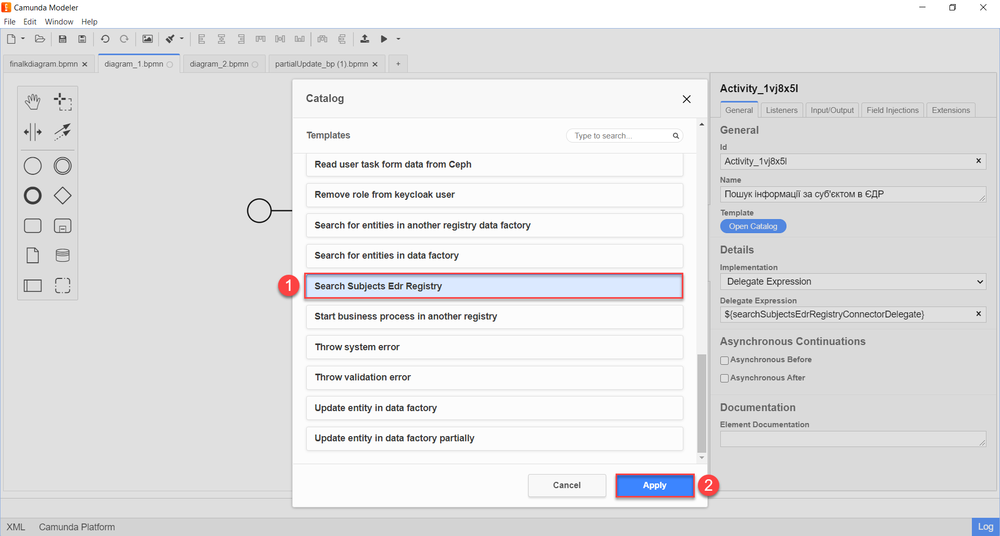
-
Налаштуйте обраний шаблон:
-
У полі
Nameвкажіть назву задачі. Наприклад,Пошук інформації за суб’єктом в ЄДР -
У полі
Authorization tokenзазначте токен для доступу до СЕВ ДЕІР "Трембіта". Наприклад,{token}.Authorization tokenнадається постачальником сервісу (в нашому випадку — ЄДР), який є іншим учасником СЕВ ДЕІР "Трембіта". -
У полі
Codeвведіть код (ЄДРПОУ або РНОКПП) для пошуку в ЄДР. Наприклад,88888888. -
У полі
Result variableзазначте назву вихідного параметру, до якого буде записано відповідь від сервісу. Наприклад,response.
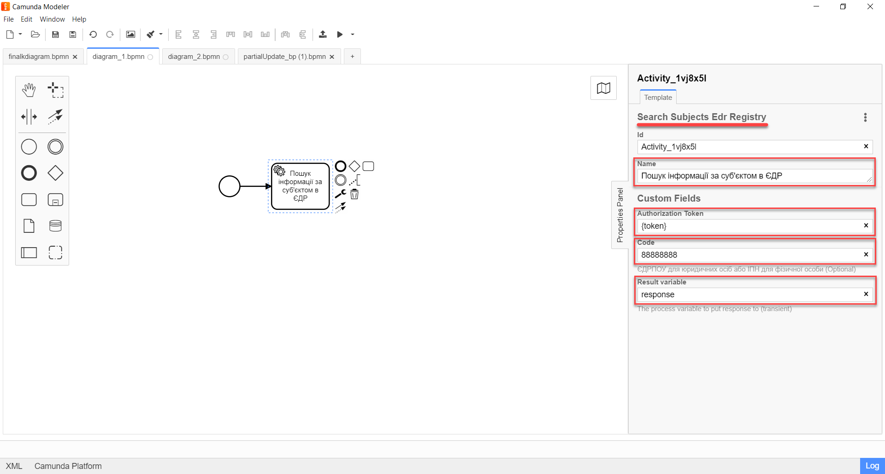
-
3.2. Отримання деталізованої інформації за суб’єктом в ЄДР
Розширення Get Subject Detail Edr Registry — делегат для виклику зовнішнього SOAP-сервісу, призначений для отримання деталізованої інформації про суб’єкт за ID, який налаштовується за допомогою шаблону Get Subject Detail Edr Registry (subjectDetailEdrRegistryConnectorDelegate.json).
|
-
Відкрийте Service Task.
-
На панелі налаштувань справа натисніть
Open Catalogта оберіть шаблон Get Subject Detail Edr Registry зі списку.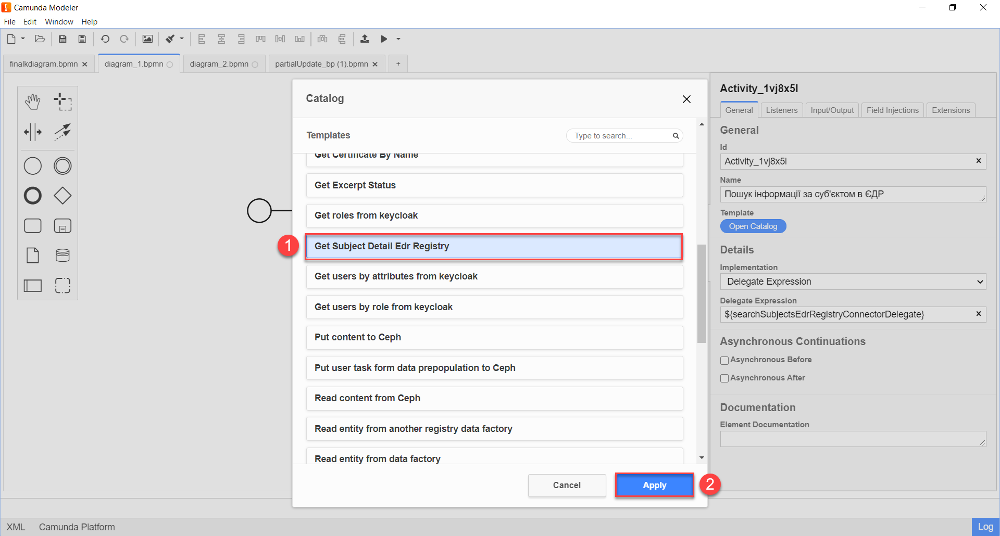
-
Налаштуйте обраний шаблон:
-
У полі
Nameвкажіть назву задачі. Наприклад,Пошук деталізованої інформації за суб’єктом в ЄДР. -
У полі
Authorization tokenзазначте токен для доступу до СЕВ ДЕІР "Трембіта". Наприклад,{token}.Authorization tokenнадається постачальником сервісу (в нашому випадку — ЄДР), який є іншим учасником СЕВ ДЕІР "Трембіта". -
У полі
Idзазначте унікальний ідентифікатор суб’єкта для пошуку в ЄДР. Наприклад,{subject_id}. -
У полі
Result variableзазначте назву вихідного параметру, до якого буде записано відповідь від сервісу. Наприклад,response.
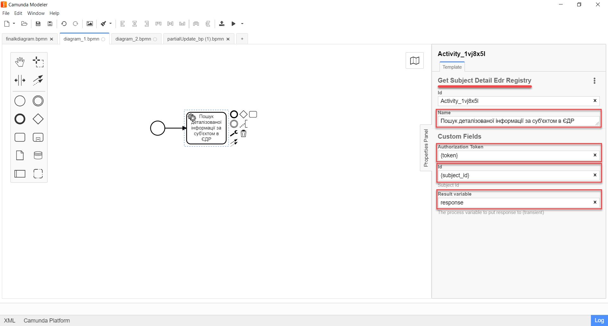
-
3.3. Приклади використання у бізнес-процесі
Розглянемо ситуацію, коли у бізнес-процесі необхідно перевірити статус суб’єкта в ЄДР.
Для цього у процесі необхідно налаштувати інтеграційний конектор для пошуку суб’єкта з ЄДР (в нашому випадку відповідь буде записано до змінної responseEDR).
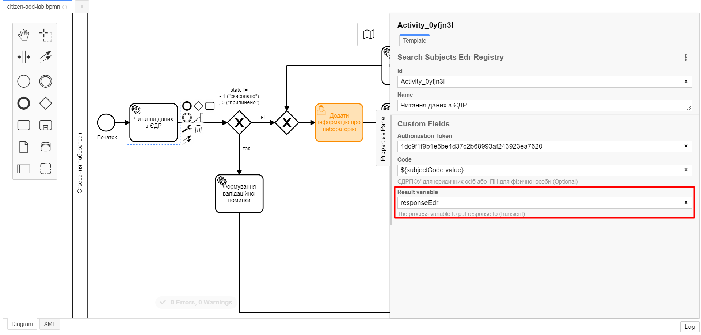
{
"name": "active user",
"code": "77777777",
"id": 213123,
"state": "ACTIVE"
}Відповідь містить параметр state, що має значення "ACTIVE".
Далі на шлюзі відбувається перевірка:
Якщо state має значення SUSPENDED або CANCELLED, то бізнес-процес видає валідаційну помилку.
|
${responseEdr.value.responseBody.elements().get(0).prop('state').value().equals('SUSPENDED') || responseEdr.responseBody.elements().get(0).prop('state').value().equals('CANCELED')}
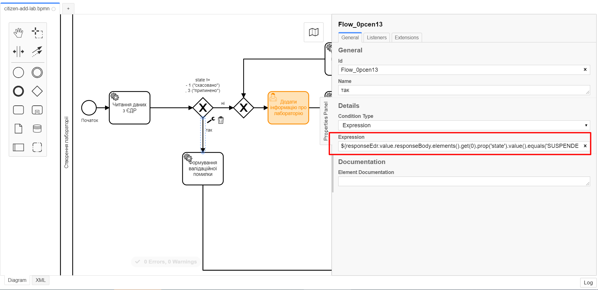
Якщо state не дорівнює SUSPENDED або CANCELLED, то відбудеться подальше виконання процесу.
|
${!responseEdr.value.responseBody.elements().get(0).prop('state').value().equals('SUSPENDED') && !responseEdr.value.responseBody.elements().get(0).prop('state').value().equals('CANCELED')}
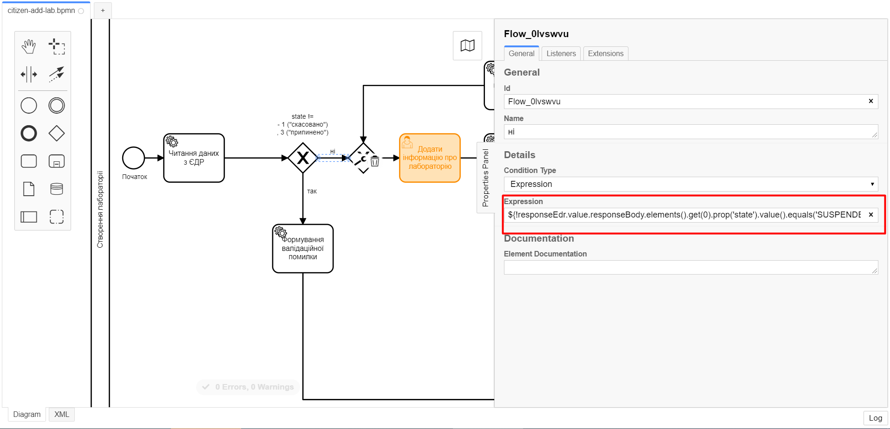
4. Розширення-конектори для отримання даних із ДРАЦС
Для спрощення моделювання бізнес-процесів розроблено типові інтеграційні конектори для отримання інформації із ДРАЦС[2], налаштування яких відбувається на схемах бізнес-процесів у додатку Camunda Modeler.
- Наразі імплементовано 2 типи конекторів для отримання даних із ДРАЦС:
-
-
Типове інтеграційне розширення-конектор до SOAP-сервісу ДРАЦС для отримання даних Свідоцтва про народження за вказаними серією і номером Свідоцтва, та датою народження —
GetCertByNumRoleBirthDate. -
Типове інтеграційне розширення-конектор до SOAP-сервісу ДРАЦС для отримання даних Свідоцтва про народження за вказаними серією і номером Свідоцтва, та ПІБ —
GetCertByNumRoleNames.
-
4.1. Отримання даних Свідоцтва про народження за вказаними серією і номером Свідоцтва, та датою народження
Розширення Get Certificate By Birthdate — делегат для виклику зовнішнього SOAP-сервісу для отримання даних Свідоцтва про народження за вказаними серією і номером Свідоцтва, та датою народження, який налаштовується за допомогою шаблону Get Certificate By Birthdate (getCertificateByBirthdateDracsRegistryDelegate.json).
|
-
Відкрийте Service Task.
-
На панелі налаштувань справа натисніть
Open Catalogта оберіть шаблон Get Certificate By Birthdate зі списку.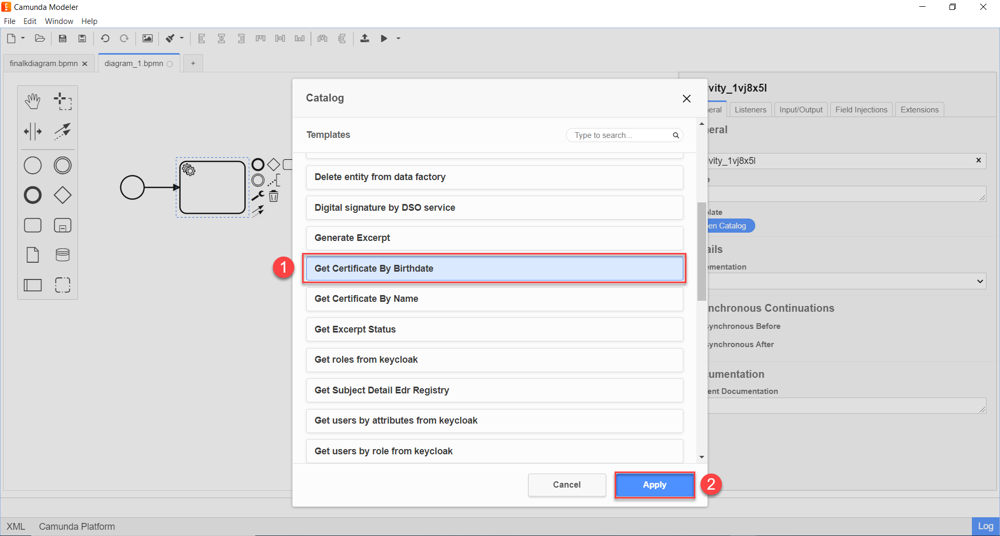
-
Налаштуйте обраний шаблон:
-
У полі
Nameвкажіть назву задачі. Це може бути призначення сервісної задачі. Наприклад,Отримати дані зі Свідоцтва про народження. -
У полі
Certificate Numberвкажіть номер сертифіката. Наприклад,218727. -
У полі
Certificate Serialвкажіть серію сертифіката. Наприклад,IV-AM.Актуальний формат номера свідоцтва та серію можна перевірити за посиланням. -
У полі
Roleвкажіть рольCHILD.Наразі Платформа реєстрів підтримує отримання даних виключно для ролі CHILD. Тобто із сервісу ДРАЦС можна отримати виключно дані дитини із сертифіката Свідоцтва про народження. Всі інші передбачені ДРАЦС ролі не підтримуються. -
У полі
Birth Yearвведіть рік народження дитини. Наприклад,2021. -
У полі
Birth Monthвкажіть місяць народження дитини. Наприклад,10. -
У полі
Birth Dayвкажіть день народження дитини. Наприклад,21. -
У полі
Result variableвкажіть результівну змінну, до якої необхідно записати відповідь від сервісу —response.Приклад відповіді можна подивитися у розділі Імплементація на рівні API 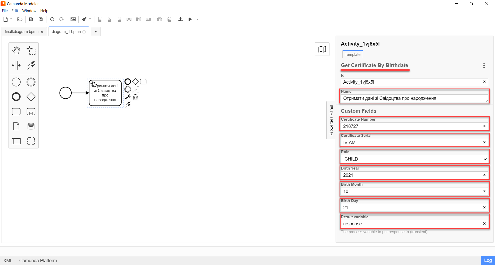
-
4.2. Отримання даних Свідоцтва про народження за вказаними серією і номером Свідоцтва, та ПІБ
Розширення Get Certificate By Name — делегат для виклику зовнішнього SOAP-сервісу для отримання даних за вказаними серією і номером Свідоцтва, та ПІБ, який налаштовується за допомогою шаблону Get Certificate By Name (getCertificateByNameDracsRegistryDelegate.json).
|
-
Відкрийте Service Task.
-
На панелі налаштувань справа натисніть
Open Catalogта оберіть шаблон Get Certificate By Name зі списку.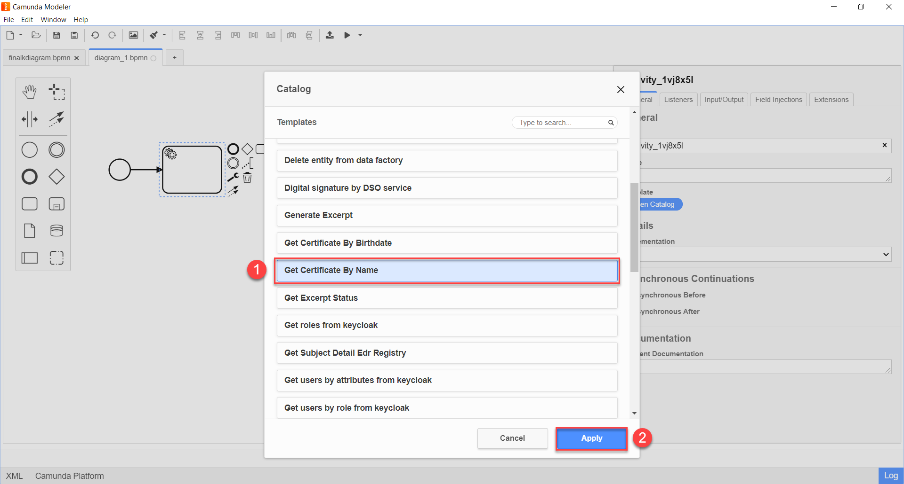
-
Налаштуйте обраний шаблон:
-
У полі
Nameвкажіть назву задачі. Це може бути призначення сервісної задачі. Наприклад,Отримати дані зі Свідоцтва про народження. -
У полі
Certificate Numberвкажіть номер сертифіката. Наприклад,218727. -
У полі
Certificate Serialвкажіть серію сертифіката. Наприклад,IV-AM.Актуальний формат номера свідоцтва та серію можна перевірити за посиланням. -
У полі
Roleвкажіть рольCHILD.Наразі Платформа реєстрів підтримує отримання даних виключно для ролі CHILD. Тобто із сервісу ДРАЦС можна отримати виключно дані дитини із сертифіката Свідоцтва про народження. Всі інші передбачені ДРАЦС ролі не підтримуються. -
У полі
Nameвведіть ім’я дитини. Наприклад,Павло. -
У полі
Surnameпрізвище дитини. Наприклад,Сидоренко. -
У полі
Patronymicпо батькові дитини. Наприклад,Іванович. -
У полі
Result variableвкажіть результівну змінну, до якої необхідно записати відповідь від сервісу —response.Приклад відповіді можна подивитися у розділі Імплементація на рівні API 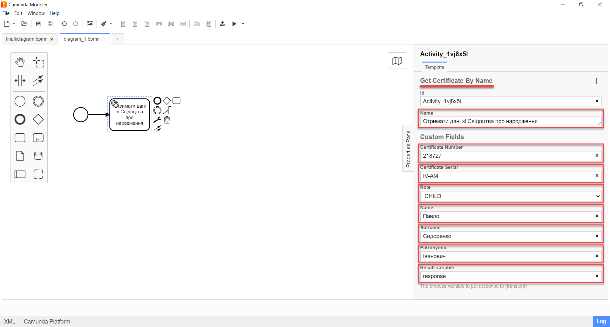
-
4.3. Імплементація на рівні API
При налаштуванні шаблонів делегата у бізнес-процесі, делегати формують запити у форматі XML і за протоколом SOAP надсилають їх відповідним сервісам ДРАЦС.
Приклад SOAP-запита до API-сервісу GetCertByNumRoleBirthDate згідно з контрактом
<s:Envelope xmlns:s="http://schemas.xmlsoap.org/soap/envelope/">
<s:Header>
...
</s:Header>
<s:Body xmlns:xsi="http://www.w3.org/2001/XMLSchema-instance" xmlns:xsd="http://www.w3.org/2001/XMLSchema">
<CeServiceRequest xmlns="http://tempuri.org/">
<ByParam>3</ByParam>
<CertNumber>218727</CertNumber>
<CertSerial>IV-AM</CertSerial>
<DateBirth>2021-21-10T00:00:00</DateBirth>
<Name xsi:nil="true" />
<Patronymic xsi:nil="true" />
<Role>1</Role>
<Surname xsi:nil="true" />
</CeServiceRequest>
</s:Body>
</s:Envelope>Приклад SOAP-запита до API-сервісу GetCertByNumRoleNames згідно з контрактом
<s:Envelope xmlns:s="http://schemas.xmlsoap.org/soap/envelope/">
<s:Header>
...
</s:Header>
<s:Body xmlns:xsi="http://www.w3.org/2001/XMLSchema-instance" xmlns:xsd="http://www.w3.org/2001/XMLSchema">
<CeServiceRequest xmlns="http://tempuri.org/">
<ByParam>4</ByParam>
<CertNumber>218727</CertNumber>
<CertSerial>IV-AM</CertSerial>
<DateBirth xsi:nil="true" />
<Name>Павло</Name>
<Patronymic>Іванович</Patronymic>
<Role>1</Role>
<Surname>Сидоренко</Surname>
</CeServiceRequest>
</s:Body>
</s:Envelope>Приклад відповіді від API згідно з контрактом для обох сервісів ДРАЦС
{
"certificate":[
{
"certStatus":1,
"certRepeat":0,
"certSerial":"IV-AM",
"certNumber":"218727",
"certSerialNumber":null,
"certOrg":null,
"certDate":null,
"arOrg":null,
"arNumb":null,
"arComposeDate":null,
"childSurname":"Сидоренко",
"childName":"Павло",
"childPatronymic":"Іванович",
"childBirthdate":null,
"fatherSurname":null,
"fatherName":null,
"fatherPatronymic":null,
"fatherCitizenship":null,
"fatherCitizenshipAnother":null,
"motherSurname":null,
"motherName":null,
"motherPatronymic":null,
"motherCitizenship":null,
"motherCitizenshipAnother":null,
"oldSurname":null,
"oldName":null,
"oldPatronymic":null,
"newSurname":null,
"newName":null,
"newPatronymic":null,
"dateOfBirth":null,
"placeofBirth":null,
"husbandOldSurname":null,
"husbandSurname":null,
"husbandName":null,
"husbandPatronymic":null,
"husbandCitizenship":null,
"husbandBirthdate":null,
"husbandPlaceofBirth":null,
"wifeOldSurname":null,
"wifeSurname":null,
"wifeName":null,
"wifePatronymic":null,
"wifeCitizenship":null,
"wifeBirthdate":null,
"wifePlaceOfBirth":null
}
]
}
Параметри зі значенням null не використовуються.
|
5. Розширення-конектор для отримання даних з ЄІБДВПО
Для спрощення моделювання бізнес-процесів розроблено типовий інтеграційний конектор для обміну інформацією з ЄІБДВПО[3], налаштування якого відбувається на схемах бізнес-процесів у додатку Camunda Modeler.
Наразі імплементовано 1 тип конектора для обміну даними з ЄІБДВПО:
-
Типове інтеграційне розширення-конектор до SOAP-сервісу ЄІБДВПО для отримання інформації за довідкою внутрішньо переміщеної особи —
idpExchangeServiceRegistryConnector.
5.1. Отримання інформації за довідкою внутрішньо переміщеної особи (ВПО)
Розширення Idp Exchange Service Registry Connector — інтеграційний конектор для виклику зовнішнього SOAP-сервісу для отримання даних за довідкою внутрішньо переміщеної особи (ВПО), який налаштовується за допомогою шаблону Idp Exchange Service Registry Connector (idpExchangeServiceRegistryConnector.json).
|
-
Відкрийте Service Task.
-
На панелі налаштувань справа натисніть Open Catalog та оберіть шаблон Idp Exchange Service Registry Connector зі списку.
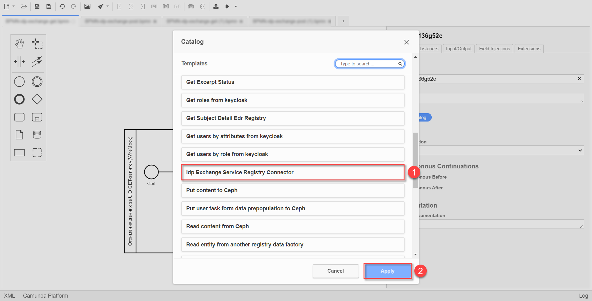
-
Налаштуйте обраний шаблон:
-
У полі
Nameвкажіть назву задачі. Це може бути призначення сервісної задачі. Наприклад,Idp Exchange Service Registry. -
У полі
Urlвкажіть шлях до сервісу. Наприклад,/idp/getCertificateByGUID/${submission('FORM_IDP_INPUT').formData.prop('uid').value()}. -
У полі
Metgodвкажіть HTTP-спосіб взаємодії з сервісомGETабоPOST. -
У полі
Body, у разі використання методуPOST, вкажіть тіло запиту. Наприклад,${submission('FORM_IDP_INPUT').formData}. -
У полі
Result variableвкажіть результівну змінну, до якої необхідно записати відповідь від сервісу —response.
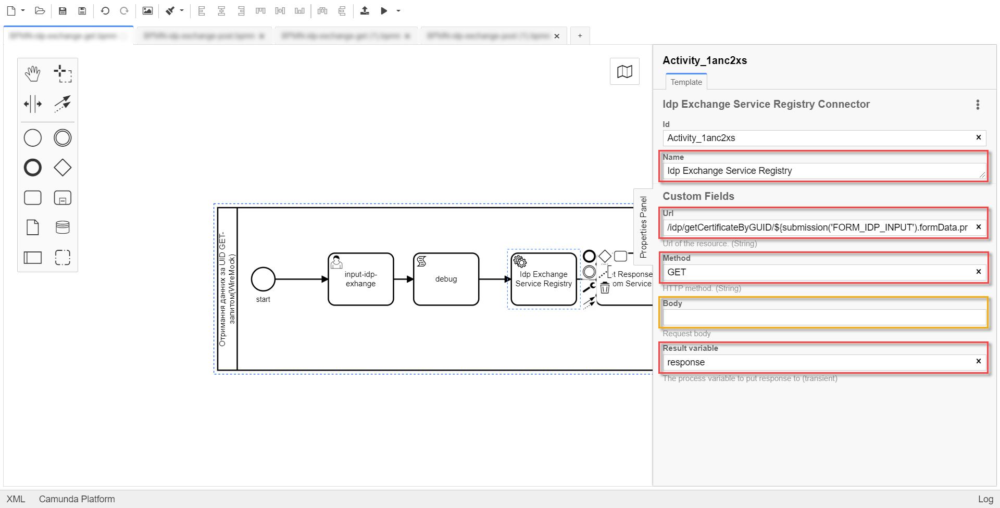
-
5.2. Імплементація на рівні API
При налаштуванні шаблонів делегата у бізнес-процесі, делегати формують запити у форматі XML і за протоколом SOAP надсилають їх відповідним сервісам ЄІБДВПО.
Приклад SOAP-запита до API-сервісу IDPexchangeService згідно з контрактом:
-
запит за РНОКПП:
{ "method": "GET", "url": "/idp/getCertificateByRNOKPP/3333333333", "body": null } -
запит за UID (унікальний ідентифікатор довідки в реєстрі ВПО):
{ "method": "GET", "url": "/idp/getCertificateByGUID/79cefcce20028d82fc1d6dda6a498da2", "body": null }
Приклад відповіді від API-сервісу IDPexchangeService згідно з контрактом:
{
"person": {
"idpSurname": "ІВАНОВ",
"idpName": "ІВАН",
"idpPatronymic": "ІВАНОВИЧ",
"birthDate": "01.01.1979 00.00.00.000",
"birthPlace": "хутір Ізбушенка, Луганської області",
"RNOKPP": "3333333333",
"gender": "Жінка",
"documentType": "1",
"documentSerie": "ЕК",
"documentNumber": "633666",
"documentDate": "13.11.1997 00.00.00.000",
"documentIssuer": "Артемівським РВЛМУУМВС укр. в Луг. обл.",
"regAddress": "ЛУГАНСЬКА ОБЛАСТЬ/М.ЛУГАНСЬК ЛУГАНСЬК ВУЛ.ПОГРАНИЧНА буд.0",
"factAddress": "М.БАХМУТ ДОНЕЦЬКА ОБЛ. ВУЛ. МИРУ буд. 00 кв. 00",
"certificateNumber": "1419-69164",
"certificateDate": "02.09.2015 00.00.00.000",
"certificateIssuer": "М.БАХМУТ ДОНЕЦЬКА ОБЛ.",
"certificateState": "знята з обліку",
"UID": "f895ad5fbbe66605979afb7e18847c1b"
},
"accompanied": []
}|
У разі необхідності використання окремого параметру(наприклад, |
6. Загальний SOAP http-конектор
|
Конектор можна використати для інтеграції з будь-яким SOAP-сервісом. |
Розширення SOAP http connector — інтеграційний конектор для виклику зовнішнього SOAP-сервісу, який налаштовується за допомогою шаблону SOAP http connector (soapHttpConnector.json).
|
6.1. Налаштування конектора
Конектор конфігурується за допомогою спеціального шаблону-розширення для сервісної (системної) задачі бізнес-процесу.
-
Створіть Service Task (Сервісну задачу).
-
На панелі справа натисніть
Select, оберіть та налаштуйте шаблон SOAP http connector зі списку:-
У полі
Nameвкажіть назву задачі.Наприклад, Пошук інформації за суб’єктом в ЄДР. -
У полі
Urlвкажіть адресу ресурсу (повний шлях до ендпоінту). Наприклад,https://trembita-edr-registry-mock.apps.envone.dev.registry.eua.gov.ua/mockEDRService. -
У полі
Headersвкажіть заголовки запита. Наприклад, ${requestHeaders}. -
У полі
Payloadвкажіть тіло запита. Наприклад,${requestPayload}. -
У полі
Result variableвкажіть змінну, до якої необхідно записати відповідь від сервісу. Наприклад,edrResponseBody.

-
<soap11env:Envelope xmlns:soap11env="http://schemas.xmlsoap.org/soap/envelope/" xmlns:tns="http://nais.gov.ua/api/sevdeir/EDR" xmlns:xroad="http://x-road.eu/xsd/xroad.xsd" xmlns:id="http://x-road.eu/xsd/identifiers">
<soap11env:Header>
...
</soap11env:Header>
<soap11env:Body>
<tns:SearchSubjectsResponse>
<tns:SubjectList>
<tns:SubjectInfo>
<tns:state>1</tns:state>
<tns:state_text>зареєстровано</tns:state_text>
<tns:name>Сидоренко Василь Леонідович</tns:name>
<tns:url>http://zqedr-api.nais.gov.ua/1.0/subjects/2222</tns:url>
<tns:code>2222</tns:code>
<tns:id>2222</tns:id>
</tns:SubjectInfo>
</tns:SubjectList>
</tns:SearchSubjectsResponse>
</soap11env:Body>
</soap11env:Envelope>
Сервіс повертає відповідь у вигляді рядка, тобто об’єкта типу String у форматі XML.
Надалі ви можете використати цю відповідь у скрипті для виводу даних на UI-форму.
|
6.2. Використання у бізнес-процесі на прикладі надсилання запита до сервісу ЄДР
Розглянемо приклад використання розробленого інтеграційного конектора у бізнес-процесі, який має взаємодію із SOAP-сервісом ЄДР (тут — виконує пошук інформації про посадову особу за кодом ЄДРПОУ (атрибутом edrpou)).
|
Скористайтеся референтними прикладами бізнес-процесу та UI-форм для кращого розуміння деталей моделювання:
|
-
Створіть бізнес-процес і додайте пул до панелі моделювання.
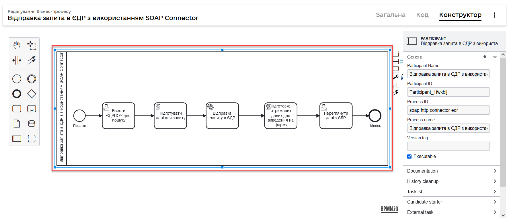
-
Створіть стартову задачу для ініціювання процесу.
Для того, щоб використовувати змінну
initiatorу бізнес-процесі, необхідно визначити її на стартовій події якinitiatorу поліStart initiator.
6.2.1. Користувацька задача введення даних для пошуку в іншому реєстрі
Далі змоделюйте користувацьку задачу (User Task), оберіть шаблон User Form (користувацька UI-форма) та виконайте налаштування.
-
Введіть назву задачі. Наприклад,
Ввести ЄДРПОУ для пошуку. -
У полі
IDвведіть ідентифікатор задачі (activity_id). Його ви можете використовувати надалі у бізнес-процесі відповідно до вашої логіки. Наприклад,searchEdrpouCodeOfficer. -
У полі
Form keyвведіть службову назву UI-форми вводу даних. Наприклад,soap-http-connector-edrpou-search-in-edr. -
У полі
Assigneeвведіть токен ініціатора процесу —${initiator}.

- Приклад UI-форми на інтерфейсі користувача може виглядати так:
-
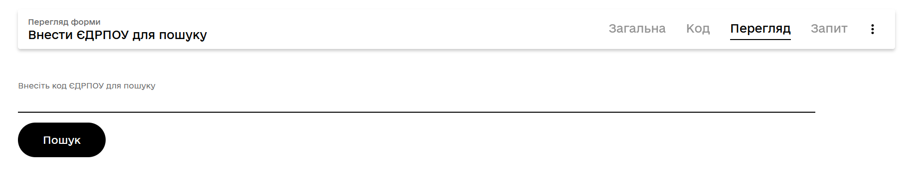
6.2.2. Скрипт для виконання запита через SOAP-конектор
Далі сформуйте Groovy-скрипт, в якому необхідно визначити параметри, а саме заголовки та тіло запита, які будуть використані SOAP-конектором для отримання даних в іншому реєстрі.
-
Створіть скрипт-задачу (Script Task).
-
Введіть назву. Наприклад,
Підготувати дані для запита. -
Відкрийте візуальний редактор скриптів та напишіть необхідний скрипт.
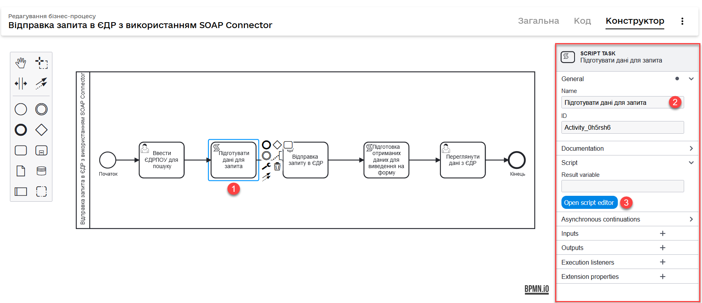
- Загалом скрипт може виглядати так:
-

-
3.1. Отримуємо код ЄДРПОУ, який ввели на першій формі:
def edrpou = submission('searchEdrpouCodeOfficer').formData.prop('edrpou').value() -
3.2. Готуємо заголовки запита:
def requestHeaders = [:] requestHeaders['SOAPAction'] = 'SearchSubjects' requestHeaders['Content-Type'] = 'text/xml;charset=UTF-8;'Підставте відповідне значення для свого запита замість 'SearchSubjects'. -
3.3. Зберігаємо заголовки до транзитної змінної процесу
requestHeaders. Значення цієї змінної ми використаємо як вхідний параметр запита у налаштуваннях SOAP-конектора.set_transient_variable('requestHeaders', requestHeaders) -
3.4. Формуємо тіло SOAP-запита до API-сервісу ЄДР згідно з контрактом:
Тіло SOAP-запита
def requestPayload = """ <SOAP-ENV:Envelope xmlns:SOAP-ENV="http://schemas.xmlsoap.org/soap/envelope/"> <SOAP-ENV:Header> <ns3:id xmlns:ns2="http://nais.gov.ua/api/sevdeir/EDR" xmlns:ns3="http://x-road.eu/xsd/xroad.xsd" xmlns:ns4="http://x-road.eu/xsd/identifiers"> a90606bb-242b-4937-a707-c860e2e2f8db </ns3:id> <ns3:userId xmlns:ns2="http://nais.gov.ua/api/sevdeir/EDR" xmlns:ns3="http://x-road.eu/xsd/xroad.xsd" xmlns:ns4="http://x-road.eu/xsd/identifiers"> MDTUDDM </ns3:userId> <ns3:protocolVersion xmlns:ns2="http://nais.gov.ua/api/sevdeir/EDR" xmlns:ns3="http://x-road.eu/xsd/xroad.xsd" xmlns:ns4="http://x-road.eu/xsd/identifiers">4.0 </ns3:protocolVersion> <ns2:AuthorizationToken xmlns:ns2="http://nais.gov.ua/api/sevdeir/EDR" xmlns:ns3="http://x-road.eu/xsd/xroad.xsd" xmlns:ns4="http://x-road.eu/xsd/identifiers"> 1dc9f1f9b1e5be4d37c2b68993af243923ea7620 </ns2:AuthorizationToken> <ns3:client xmlns:ns2="http://nais.gov.ua/api/sevdeir/EDR" xmlns:ns3="http://x-road.eu/xsd/xroad.xsd" xmlns:ns4="http://x-road.eu/xsd/identifiers" ns4:objectType="SUBSYSTEM"> <ns4:xRoadInstance>SEVDEIR-TEST</ns4:xRoadInstance> <ns4:memberClass>GOV</ns4:memberClass> <ns4:memberCode>43395033</ns4:memberCode> <ns4:subsystemCode>IDGOV_TEST_01</ns4:subsystemCode> </ns3:client> <ns3:service xmlns:ns2="http://nais.gov.ua/api/sevdeir/EDR" xmlns:ns3="http://x-road.eu/xsd/xroad.xsd" xmlns:ns4="http://x-road.eu/xsd/identifiers" ns4:objectType="SERVICE"> <ns4:xRoadInstance>SEVDEIR-TEST</ns4:xRoadInstance> <ns4:memberClass>GOV</ns4:memberClass> <ns4:memberCode>00015622</ns4:memberCode> <ns4:subsystemCode>2_MJU_EDR_prod</ns4:subsystemCode> <ns4:serviceCode>SearchSubjects</ns4:serviceCode> </ns3:service> </SOAP-ENV:Header> <SOAP-ENV:Body> <ns2:SearchSubjects xmlns:ns2="http://nais.gov.ua/api/sevdeir/EDR" xmlns:ns3="http://x-road.eu/xsd/xroad.xsd" xmlns:ns4="http://x-road.eu/xsd/identifiers"> <ns2:code>${edrpou}</ns2:code> </ns2:SearchSubjects> </SOAP-ENV:Body> </SOAP-ENV:Envelope> """Підставляємо змінну
${edrpou}у тіло запита:<SOAP-ENV:Body> <ns2:SearchSubjects xmlns:ns2="http://nais.gov.ua/api/sevdeir/EDR" xmlns:ns3="http://x-road.eu/xsd/xroad.xsd" xmlns:ns4="http://x-road.eu/xsd/identifiers"> <ns2:code>${edrpou}</ns2:code> </ns2:SearchSubjects> </SOAP-ENV:Body> -
3.5. Зберігаємо тіло запита до транзитної змінної процесу
requestPayload. Значення цієї змінної ми використаємо як вхідний параметр запита у налаштуваннях SOAP-конектора.set_transient_variable('requestPayload', requestPayload as String)requestPayloadнеобхідно передати як рядок (as String).
-
Використовуйте параметри, збережені до змінних у скрипті, в рамках сервісної задачі та налаштуванні SOAP-конектора.
6.2.3. Сервісна задача для відправлення пошукового запита до іншого реєстру
Далі необхідно створити сервісну задачу, застосувати та налаштувати шаблон для SOAP-http-конектора.
| Див. детальніше у розділі Налаштування конектора. |
6.2.4. Скрипт для виводу даних на UI-форму користувача
Далі необхідно передати дані на UI-форму, отримані в іншому реєстрі за допомогою SOAP-http-конектора. Для цього спочатку сформуйте відповідний скрипт, який зможе це зробити.
-
Створіть скрипт-задачу (Script Task).
-
Введіть назву. Наприклад,
Підготовка отриманих даних для виведення на форму. -
Відкрийте візуальний редактор скриптів та напишіть необхідний скрипт.
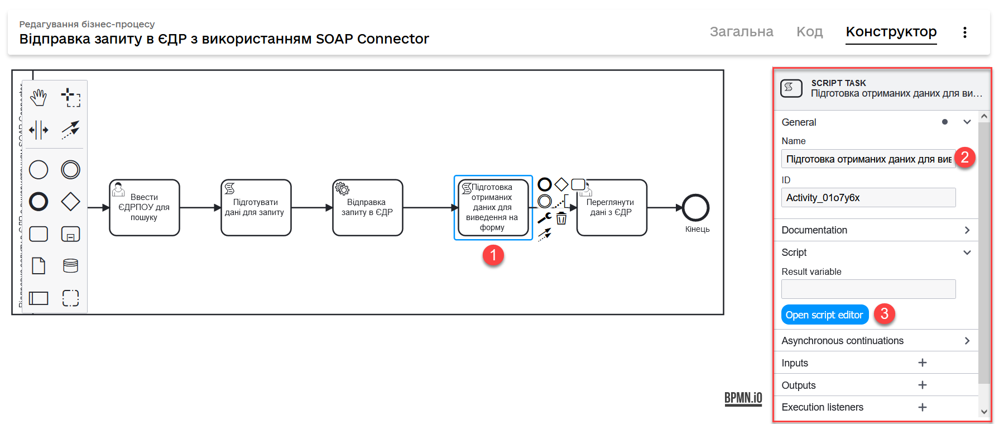
- Загалом скрипт може виглядати так:
-
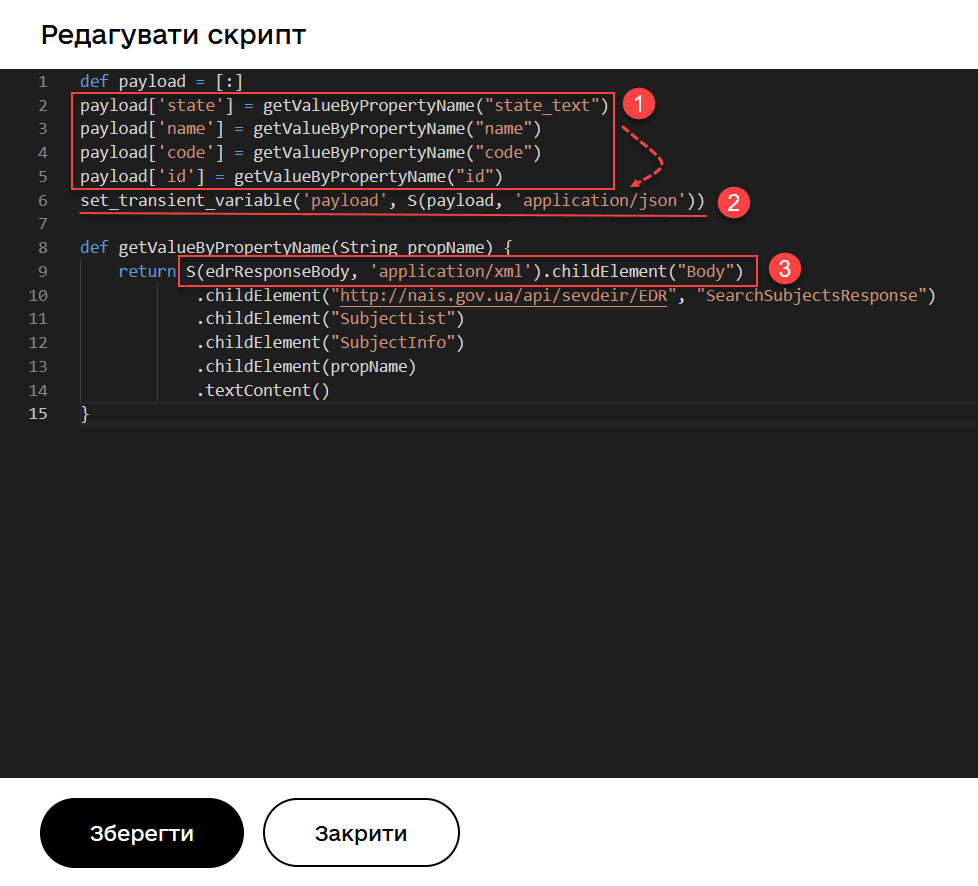
-
3.1. Формуємо JSON-об’єкт з параметрами
state,name,code,id, щоб передати їх на форму. -
3.2. Зберігаємо об’єкт до змінної
payload, яку ми й використаємо як вхідний параметр для передачі даних на форму.Скрипт для виводу даних на UI-форму користувача
def payload = [:] payload['state'] = getValueByPropertyName("state_text") payload['name'] = getValueByPropertyName("name") payload['code'] = getValueByPropertyName("code") payload['id'] = getValueByPropertyName("id") set_transient_variable('payload', S(payload, 'application/json')) def getValueByPropertyName(String propName) { return S(edrResponseBody, 'application/xml').childElement("Body") .childElement("http://nais.gov.ua/api/sevdeir/EDR", "SearchSubjectsResponse") .childElement("SubjectList") .childElement("SubjectInfo") .childElement(propName) .textContent() }Функція S(edrResponseBody, 'application/xml')повертає об’єкт відповідно до специфікації SpinXmlElement.
-
6.2.5. Користувацька задача передачі даних на UI-форму
Насамкінець необхідно вивести отримані в іншому реєстрі та опрацьовані скриптом дані на UI-форму користувача.
Змоделюйте користувацьку задачу (User Task), оберіть шаблон User Form (користувацька UI-форма) та виконайте налаштування.
-
Введіть назву задачі. Наприклад,
Переглянути дані з ЄДР. -
У полі
IDвведіть ідентифікатор задачі (activity_id). Наприклад,writeResultForm. -
У полі
Form keyвведіть службову назву UI-форми перегляду отриманих даних. Наприклад,soap-http-connector-edrpou-edr-result-view. -
У полі
Assigneeвведіть токен ініціатора процесу —${initiator}. -
У полі
Form data pre-populationвкажіть як змінну об’єкт із параметрами, які необхідно передати на форму, —${payload}.Змінна формується у задачі Скрипт для виводу даних на UI-форму користувача.

- Приклад UI-форми на інтерфейсі користувача може виглядати так:
-

Змоделюйте задачу завершення процесу та збережіть зміни.
7. Загальний Trembita SOAP-конектор
|
Конектор можна використати для інтеграції з будь-яким SOAP-сервісом, зареєстрованим у СЕВ ДЕІР "Трембіта". Детальніше про налаштування взаємодії з "Трембітою" див. на сторінці Налаштування взаємодії з реєстрами через ШБО "Трембіта" у Control Plane. |
Trembita SOAP connector — інтеграційне розширення-делегат ${trembitaSoapConnectorDelegate}, призначене для виклику зовнішнього SOAP-сервісу через ШБО "Трембіта". Воно налаштовується у бізнес-процесі за допомогою шаблону Trembita SOAP connector (trembitaSoapConnectorDelegate.json).
|
7.1. Налаштування делегата
Делегат конфігурується за допомогою спеціального шаблону-розширення для сервісної (системної) задачі бізнес-процесу.
-
Створіть Service Task (Сервісну задачу).
-
На панелі справа натисніть
Select, оберіть та налаштуйте шаблон Trembita SOAP connector зі списку: -
У полі
Nameсекції General вкажіть назву задачі. Наприклад,Відправлення запита до ЄДР. -
Розділ Custom properties:
-
У полі
Trembita system nameвкажіть назву зовнішньої системи-учасника СЕВ ДЕІР "Трембіта", з якою встановлено підключення через адміністративну панель Control Plane. Наприклад,trembita-registry-test. -
У полі
Trembita service nameвкажіть назву сервісу зовнішньої системи "Трембіта", куди необхідно виконати запит. Наприклад,testAction.Назва сервісу = SOAP Action. Вона визначає, який процес або програму необхідно викликати, коли запит надсилається клієнтом сервісу. -
У полі
Content typeвизначається формат представлення даних та кодування. За замовчуванням —text/xml;charset=UTF-8;. -
У полі
Request payloadвкажіть змінну, яка містить дані запита. Наприклад,${requestPayload}.${requestPayload}формується попередньо у скрипті (див. детальніше — Скрипт для виконання запита через Trembita SOAP-конектор).Тіло запита може виглядати так:
Приклад 5. Тіло запита згідно з контрактом для сервісу ЄДР<ns2:SearchSubjects xmlns:ns2="http://nais.gov.ua/api/sevdeir/EDR" xmlns:ns3="http://x-road.eu/xsd/xroad.xsd" xmlns:ns4="http://x-road.eu/xsd/identifiers"> <ns2:code>$edrpou</ns2:code> </ns2:SearchSubjects> -
У полі
Result variableвкажіть змінну, до якої необхідно записати відповідь від сервісу. Наприклад,edrResponseBody.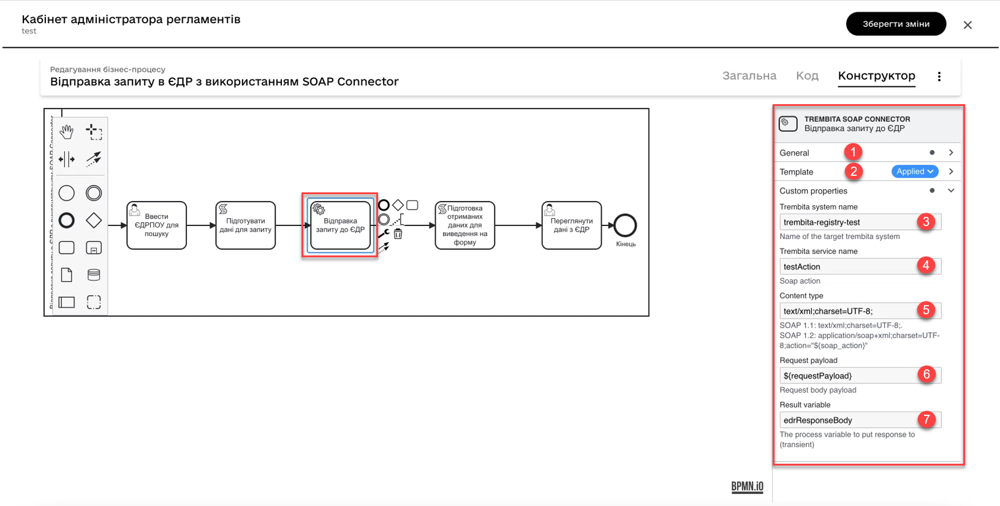
Приклад 6. Відповідь від API згідно з контрактом для сервісу ЄДР<soap11env:Envelope xmlns:soap11env="http://schemas.xmlsoap.org/soap/envelope/" xmlns:tns="http://nais.gov.ua/api/sevdeir/EDR" xmlns:xroad="http://x-road.eu/xsd/xroad.xsd" xmlns:id="http://x-road.eu/xsd/identifiers"> <soap11env:Header> ... </soap11env:Header> <soap11env:Body> <tns:SearchSubjectsResponse> <tns:SubjectList> <tns:SubjectInfo> <tns:state>1</tns:state> <tns:state_text>зареєстровано</tns:state_text> <tns:name>Сидоренко Василь Леонідович</tns:name> <tns:url>http://zqedr-api.nais.gov.ua/1.0/subjects/2222</tns:url> <tns:code>2222</tns:code> <tns:id>2222</tns:id> </tns:SubjectInfo> </tns:SubjectList> </tns:SearchSubjectsResponse> </soap11env:Body> </soap11env:Envelope>Делегат повертає відповідь у вигляді об’єкта типу SpinXmlElement. -
7.2. Використання у бізнес-процесі на прикладі надсилання запита до сервісу ЄДР
Розглянемо приклад використання розробленого інтеграційного конектора у бізнес-процесі, який має взаємодію із SOAP-сервісом ЄДР (тут — виконує пошук інформації про посадову особу за кодом ЄДРПОУ (атрибутом edrpou)).
|
Скористайтеся референтними прикладами бізнес-процесу та UI-форм для кращого розуміння деталей моделювання:
|
|
Конектор можна використати для інтеграції з будь-яким SOAP-сервісом, зареєстрованому у СЕВ ДЕІР "Трембіта". |
-
Створіть бізнес-процес і додайте пул до панелі моделювання.
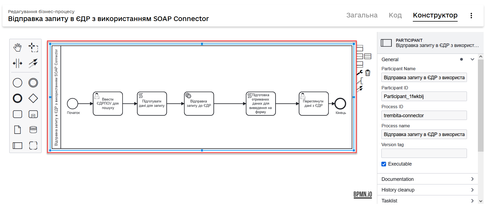
-
Створіть стартову задачу для ініціювання процесу.
Для того, щоб використовувати змінну
initiatorу бізнес-процесі, необхідно визначити її на стартовій події якinitiatorу поліStart initiator.
7.2.1. Користувацька задача введення даних для пошуку в іншому реєстрі
Далі змоделюйте користувацьку задачу (User Task), оберіть шаблон User Form (користувацька UI-форма) та виконайте налаштування.
-
Введіть назву задачі. Наприклад,
Ввести ЄДРПОУ для пошуку. -
У полі
IDвведіть ідентифікатор задачі (activity_id). Його ви можете використовувати надалі у бізнес-процесі відповідно до вашої логіки. Наприклад,searchEdrpouCodeOfficer. -
У полі
Form keyвведіть службову назву UI-форми вводу даних. Наприклад,soap-http-connector-edrpou-search-in-edr. -
У полі
Assigneeвведіть токен ініціатора процесу —${initiator}.
- Приклад UI-форми на інтерфейсі користувача може виглядати так:
-
7.2.2. Скрипт для виконання запита через Trembita SOAP-конектор
Далі сформуйте Groovy-скрипт, в якому необхідно визначити параметри, а саме тіло запита й опціонально — заголовки, які будуть використані SOAP-конектором для отримання даних в іншому реєстрі.
|
Делегат автоматично додасть наступні системні заголовки при виконанні запита до SOAP-сервісу. Перелік і структура заголовків |
-
Створіть скрипт-задачу (Script Task).
-
Введіть назву. Наприклад,
Підготувати дані для запита. -
Відкрийте візуальний редактор скриптів та напишіть необхідний скрипт.
- Загалом скрипт може виглядати так:
-
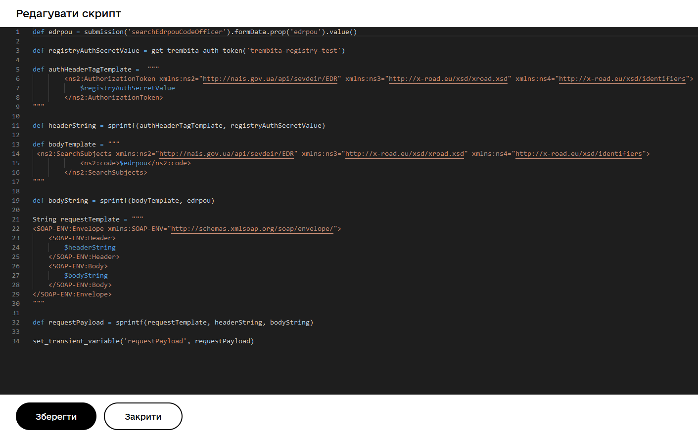
-
3.1. Отримуємо значення коду
edrpou, який ввели на першій формі вводу даних (formData):def edrpou = submission('searchEdrpouCodeOfficer').formData.prop('edrpou').value() -
3.2. Отримуємо токен авторизації для доступу до сервісу за допомогою JUEL-функції
get_trembita_auth_token().def registryAuthSecretValue = get_trembita_auth_token('trembita-registry-test')Функція
get_trembita_auth_token()дозволяє отримати токен авторизації для доступу до сервісів СЕВ ДЕІР "Трембіта", з якими попередньо налаштовано взаємодію у Control Plane (див. детальніше — JUEL-функції у бізнес-процесах). -
3.3. Створюємо шаблон заголовка SOAP-запита із токеном авторизації.
def authHeaderTagTemplate = """ <ns2:AuthorizationToken xmlns:ns2="http://nais.gov.ua/api/sevdeir/EDR" xmlns:ns3="http://x-road.eu/xsd/xroad.xsd" xmlns:ns4="http://x-road.eu/xsd/identifiers"> $registryAuthSecretValue </ns2:AuthorizationToken> """ -
3.4. Заповнюємо шаблон заголовка із токеном авторизації.
def headerString = sprintf(authHeaderTagTemplate, registryAuthSecretValue) -
3.5. Створюємо шаблон тіла SOAP-запита для пошуку суб’єкта за кодом ЄДРПОУ.
def bodyTemplate = """ <ns2:SearchSubjects xmlns:ns2="http://nais.gov.ua/api/sevdeir/EDR" xmlns:ns3="http://x-road.eu/xsd/xroad.xsd" xmlns:ns4="http://x-road.eu/xsd/identifiers"> <ns2:code>$edrpou</ns2:code> </ns2:SearchSubjects> """ -
3.6. Заповнюємо шаблон тіла SOAP-запита зі значенням
edrpou.def bodyString = sprintf(bodyTemplate, edrpou) -
3.7. Створюємо шаблон SOAP-запита зі згенерованим заголовком та тілом.
String requestTemplate = """ <SOAP-ENV:Envelope xmlns:SOAP-ENV="http://schemas.xmlsoap.org/soap/envelope/"> <SOAP-ENV:Header> $headerString </SOAP-ENV:Header> <SOAP-ENV:Body> $bodyString </SOAP-ENV:Body> </SOAP-ENV:Envelope> """Змінні
headerStringтаbodyStringформуються з шаблонівauthHeaderTagTemplateтаbodyTemplateвідповідно, де змінні$registryAuthSecretValueі$edrpouзамінюються на значення зміннихregistryAuthSecretValueтаedrpou, що були отримані на попередніх етапах у скрипті. -
3.8. Далі формуємо запит на отримання інформації про суб’єкт за його ЄДРПОУ.
def requestPayload = sprintf(requestTemplate, headerString, bodyString)Запит формується за допомогою змінної
requestTemplate, в якій змінні $headerString і $bodyString замінюються на їх відповідні значення. -
3.9. Кінцевий запит зберігаємо у змінній
requestPayloadі додаємо до тимчасових змінних за допомогою функціїset_transient_variable(). Значення цієї змінної ми використаємо як вхідний параметр запита у налаштуваннях Trembita SOAP-конектора (див. детальніше — Налаштування делегата).set_transient_variable('requestPayload', requestPayload)Тимчасові змінні дозволяють зберігати дані на певний час, щоб вони були доступні наступним етапам скрипту (до наступної користувацької задачі), але не були збережені назавжди.
-
7.2.3. Сервісна задача для відправлення пошукового запита до іншого реєстру
Далі необхідно створити сервісну задачу, застосувати та налаштувати делегат для Trembita SOAP-конектора.
| Див. детальніше у розділі Налаштування делегата. |
7.2.4. Скрипт для виводу даних на UI-форму користувача
Далі необхідно передати дані на UI-форму, отримані в іншому реєстрі за допомогою SOAP-http-конектора. Для цього спочатку сформуйте відповідний скрипт, який зможе це зробити.
-
Створіть скрипт-задачу (Script Task).
-
Введіть назву. Наприклад,
Підготовка отриманих даних для виведення на форму. -
Відкрийте візуальний редактор скриптів та напишіть необхідний скрипт.
- Загалом скрипт може виглядати так:
-
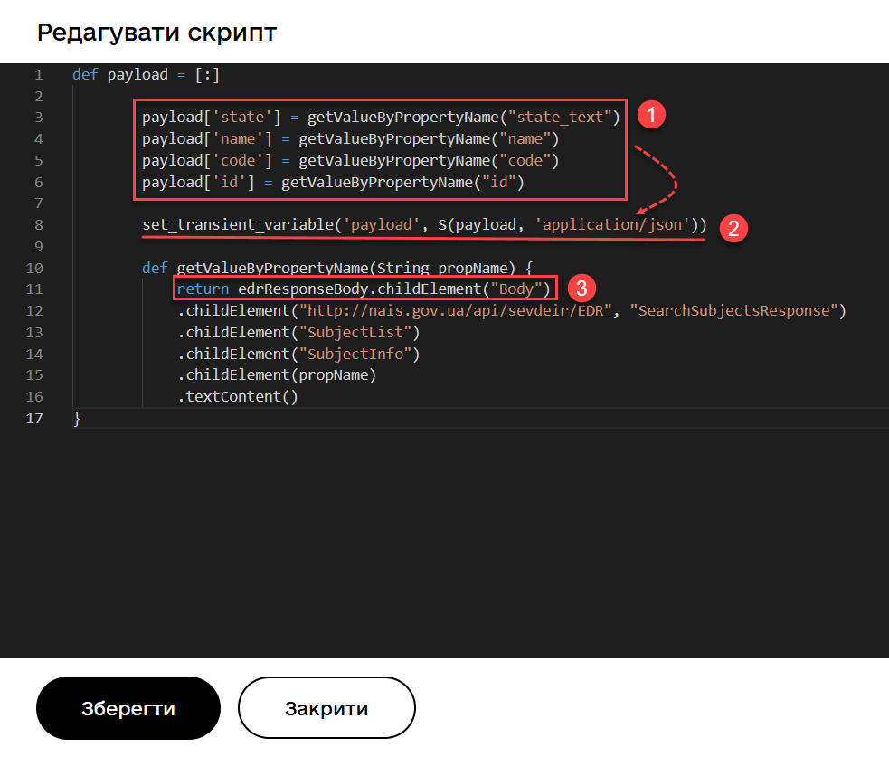
-
3.1. Формуємо JSON-об’єкт із параметрами
state,name,code,id, щоб передати їх на форму. -
3.2. Зберігаємо об’єкт до змінної
payload, яку ми й використаємо як вхідний параметр для передачі даних на форму.Скрипт для виводу даних на UI-форму користувача
def payload = [:] payload['state'] = getValueByPropertyName("state_text") payload['name'] = getValueByPropertyName("name") payload['code'] = getValueByPropertyName("code") payload['id'] = getValueByPropertyName("id") set_transient_variable('payload', S(payload, 'application/json')) def getValueByPropertyName(String propName) { return edrResponseBody.childElement("Body") .childElement("http://nais.gov.ua/api/sevdeir/EDR", "SearchSubjectsResponse") .childElement("SubjectList") .childElement("SubjectInfo") .childElement(propName) .textContent() }
-
7.2.5. Користувацька задача передачі даних на UI-форму
Насамкінець необхідно вивести отримані в іншому реєстрі та опрацьовані скриптом дані на UI-форму користувача.
Змоделюйте користувацьку задачу (User Task), оберіть шаблон User Form (користувацька UI-форма) та виконайте налаштування.
-
Введіть назву задачі. Наприклад,
Переглянути дані з ЄДР. -
У полі
IDвведіть ідентифікатор задачі (activity_id). Наприклад,writeResultForm. -
У полі
Form keyвведіть службову назву UI-форми вводу даних. Наприклад,soap-http-connector-edrpou-edr-result-view. -
У полі
Assigneeвведіть токен ініціатора процесу —${initiator}. -
У полі
Form data pre-populationвкажіть як змінну об’єкт із параметрами, які необхідно передати на форму, —${payload}.Змінна формується у задачі Скрипт для виводу даних на UI-форму користувача.
- Приклад UI-форми на інтерфейсі користувача може виглядати так:
-
Змоделюйте задачу завершення процесу та збережіть зміни.